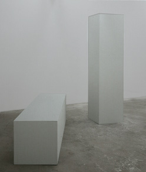
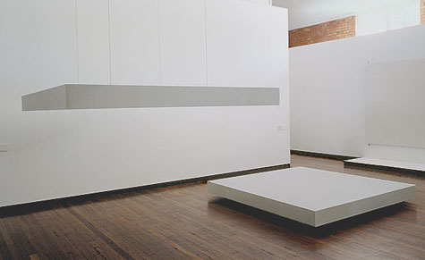
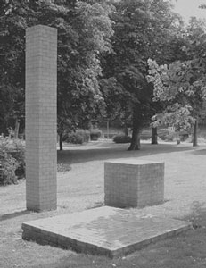
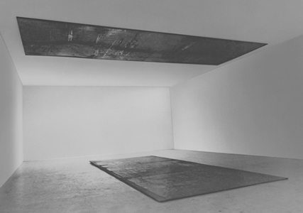

mechanics
as art
mechanics
as art  radical
art homepage
radical
art homepage
static positions in a gravitational field
It is not true that what we need is to "accept instability." That is again the easy way. We need STATIC VALUES! ... we need faith! ... we need God! We need cathedrals and pyramids! We need a greater, a meaningful art!
|
lying or standing vs. hanging; and lying vs. standing
Simon Stevin: The
Principles of the Science of Weight. Leyden, 1586 (First
Book, p. 24.) |

|

|
 |
 |
Sources
|
compiled by remko scha, june 2012